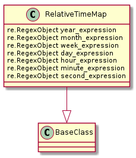
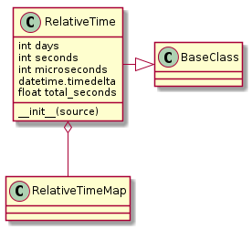
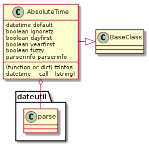

The RelativeTimeMap maps strings of relative times to seconds. It tries to be as liberal as possible so there has to be a fair amount of certainty that the string is in fact a time and not something similar but different. ‘5 yolks’ will match ‘5’ years, for instance, and if that is not the desired behavior then something else has to do a check first to filter out bad strings.
It uses dateutil to calculate everything but the seconds because dateutil will handle the ambiguous values like years (which have leap-years) and months which have 28, 29, 30, or 31 days.

RelativeTimeMap |
|
RelativeTimeMap.year_expression |
|
RelativeTimeMap.month_expression |
|
RelativeTimeMap.week_expression |
|
RelativeTimeMap.day_expression |
|
RelativeTimeMap.hour_expression |
|
RelativeTimeMap.minute_expression |
|
RelativeTimeMap.second_expression |
This is an attempt to extend the timedelta with weeks, hours, and minutes. The original intention was to also allow months and years, requiring the use of the dateutil package, but at this point I can’t see an immediate use for it, so I’ll stop at weeks, since it doesn’t need special cases the way months and years do.

By and large the intention is to use this like a time-delta object but with extra fields, so the operators will be overloaded too.
RelativeTime |
|
RelativeTime.source |
|
RelativeTime.time_map |
|
RelativeTime.days |
|
RelativeTime.seconds |
|
RelativeTime.microseconds |
|
RelativeTime.get_number |
|
RelativeTime.populate_fields |
|
RelativeTime.reset |
|
RelativeTime.total_seconds |
I’ve run into a circular call problem – my intention was to defer the calculations of the properties until someone called them, but since the larger properties cascade into the smaller ones (e.g. 1.5 minutes would add 30 to seconds to get rid of the fraction) I have to have a single point where the calculations are done so that all of them are done. To do this without requiring anyone to do an explicit method call I’m doing the calculations on the setting of the source. Since I am averse to forcing calculations on construction of an object, the source parameter has been changed to optional and setting it to None should reset the fields.
To make it more obvious that the fields have not been populated they will have the default of None. This way if the source has not been set and a calculation is attempted using the fields it will raise an error.
Reading the timedelta information more closely, it appears that it actually accepts anything I want to give it (up to weeks), it just converts them to days, seconds, and microseconds to store them. So the cascading that I was trying to do (separating out the fraction and propagating it to another unit) is actually unnecessary unless there’s a need to preserve the separate units. To make it easier I won’t.
Well... now that I think about it, I’ve changed things so much that it has brought me back around to where using the relativedelta might make sense. Unfortunately I still need the hack, but this should allow it to accept months and years.
| Constructor | Attribute |
|---|---|
| years | |
| months | |
| weeks | |
| days | days |
| hours | |
| minutes | |
| seconds | seconds |
| microseconds | microseconds |
The timedelta only stores three attributes – days, seconds, and microseconds, athough it takes the other attributes on construction of the object and then converts them to the three permanent attributes.
Warning
timedelta takes floats (like 3.2) but the extra attributes for relativedelta (months and years) have to be integers.
Since the operations are expected to raise TunaErrors whenever possible, these decorators will translate standard exceptions to TunaErrors.
source_required |
|
operation_error |
|
number_error |
|
unary_error |
timedelta |
Difference between two datetime values. |
timedelta.days |
Number of days. |
timedelta.seconds |
Number of seconds (>= 0 and less than 1 day). |
timedelta.microseconds |
Number of microseconds (>= 0 and less than 1 second). |
timedelta.total_seconds |
Total seconds in the duration. |
Since the timedelta supports operations, the RelativeTime has overloaded the following operations so that it behaves like a timedelta object.
| Operation | Description |
|---|---|
| t1 + t2 | Sums two timedeltas |
| t1 - t2 | Subtracts one timedelta from another |
| t1 * int | Mulitplies a timedelta by an integer |
| t1 // int | Calculates the floor of a timedelta and throws away the remainder |
| +t1 | Makes the timedelta positive |
| -t1 | Negates the timedelta |
| abs(t1) | Depends on number of days |
| str(t) | string |
| repr(t) | representation string |
Equality and inequality have also been implemented but there are two warnings:
- If you have too many decimal places for parameters fed to a timedelta they might not equate with the RelativeTime, even if given the same parameters
- This only works if the RelativeTime is on the left-hand-side (RelativeTime == timedelta)
This is a class to get datetime objects based on a string input. It really is just a pass-through to dateutil.parser.parse but holds persistent values so they don’t have to be passed in for every function call by the user.
parse(timestr[, parserinfo]) |
Parse a string in one of the supported formats, using the parserinfo parameters. |
datetime(year, month, day[, hour[, minute[, ...) |
The year, month and day arguments are required. |

AbsoluteTime |
|
AbsoluteTime.__call__ |
These are the same as the parse function’s arguments. I think in most cases the defaults are all that you’ll need, but I’ll at least document how the dayfirst and yearfirst arguments affect the format precedence. If the timestamp is unambiguous, they won’t matter, but for the cases where the fields are ambiguous (e.g. ‘11-11-23’) the two parameters decide what to assume about the timestamp.
dayfirst |
yearfirst |
Order of Precedence (Left to Right) |
|---|---|---|
| False | False | MM-DD-YY, DD-MM-YY, YY-MM-DD (default) |
| False | True | YY-MM-DD, MM-DD-YY, DD-MM-YY |
| True | False | DD-MM-YY, MM-DD-YY, YY-MM-DD |
| True | True | YY-MM-DD, DD-MM-YY, MM-DD-yy |